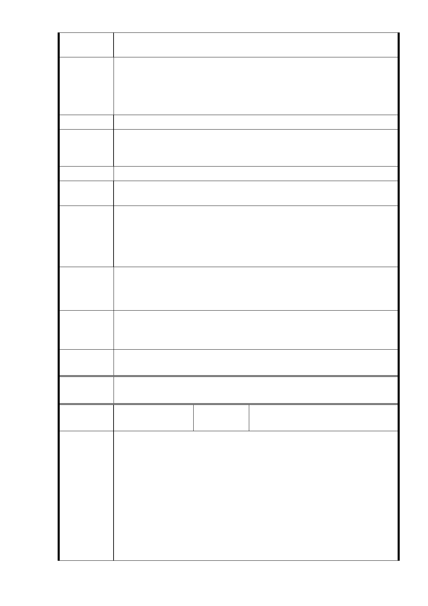

過 30 層樓建築，因該地為斷層帶區塊，加上已有捷運挖掘，恐
有造成重大災害之安全疑慮
一、建議建藥物開發以安全為首要考量，開發強度不應加強，社
建議辦法
福用地建築物不超過地上十層樓。
二、建議參考北投圖書館以社福公共設施併同週邊公園生態、造
福地區居民。
陳 情 位 置 信義區福德段二小段部分 320 地號（公園用地）
新修訂計畫（稿）將公園作為周邊開發腹地，說明所謂「多功能
陳 情 理 由 用途」，無法排除為周邊區域濫用（如污水處理、廢棄物擱置、
排煙孔等）之可能
建 議 辦 法 為保育老樹，建議位置用途不應設置地下停車場，
陳情位置
信義區福德段二小段部分 320、335、342 地號（第三種商業區（
特））
依新修訂計畫（稿），建議位置仍可能設置高樓層建物（原規劃
為 33 層樓旅店、26 層樓住宅多棟），因該地為斷層帶區塊，加
陳 情 理 由 上已有捷運挖掘，恐有造成重大災害之安全疑慮。
本市及本區商業區業已充足，本區走路僅 5 分鐘可到忠孝束路五
段商圈，15 分鐘可至 101 商圈，無再開發商業區必要。
一、開發強度不應加強，建築物開發須以安全為首要考量
建 議 辦 法 二、建議位置用途不應為商業區使用，應結合地方歷史與老樹生
態開發文化區，可參考北投圖書館。
市府回應
意見
1.有關樹保部分，同編號1回復內容。
2.有關斷層及地震等疑慮，同編號2回復內容。
3.有關劃設商業區部分，同編號1回復內容。
專案小組
審查結論
同編號 1。
委
決
員
會
議
同編號 1。
編號
22
陳情人
松菸公園催生聯盟兼代表人 游
○
1. 臺北市區己有大量商業設施，但社會福利照護資源大量不足
，廣慈社福園區不應另行劃設商業區，侵奪原應屬於社福專
用之土地。
2. 廣慈社福園區原有七百餘株老樹，然本案未考量基地原有珍
陳情理由
貴之綠地資源，將多數開發量體配置於老樹最多的地方，應
重新檢討都市計畫土地使用分區的配置。
3. 本案開發面積已達開發行為應實施環境影響評估細目及範圍
認定標準第 31 條第 12 款「安養中心、護理機構或長期照護
機構、養護機構、安養機構等老人福利機構，其興建或擴建
工程符合第一款第一目至第九目規定之一。」第 8 目「位於
- 57 -